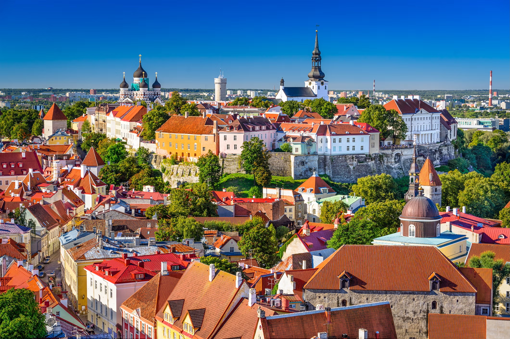

Eastern Europe Tour
Embark on a transformative tour of Eastern Europe
Join us for an unforgettable journey through Eastern Europe, where faith, culture, and history come alive! We’ll visit Prague, home to the miraculous Infant Jesus of Prague and the iconic Charles Bridge and Prague Castle. In Vienna, experience both spiritual beauty and imperial grandeur as we explore its elegant churches, the Schönbrunn Palace, and St. Stephen’s Cathedral. Discover Budapest’s stunning Parliament Building and Buda Castle, before continuing to Zagreb’s charming old town and the peaceful village of Medjugorje, a sacred site of Marian devotion. Our journey continues through the rich history of Sarajevo and the vibrant culture of Belgrade, where East meets West. This tour offers the perfect blend of spiritual renewal and cultural discovery—an experience you’ll treasure for a lifetime.

Dates and Pricing
Join us for an unforgettable 10-day, 9-night pilgrimage from May 15 to May 25, 2026, exploring some of Eastern Europe’s most cherished spiritual and historical sites.
The cost for this enriching journey is $3,750 per person, based on double bedroom occupancy. To secure your place, a $1,500 deposit is required at the time of reservation. This all-inclusive price covers round-trip airfare from JFK, bus travel between the destinations, 4-star hotels, and all meals (breakfast, lunch, and dinner), as well as gratuities.
Package Inclusions
All of the following is included within the tour package for a seamless and enriching journey:
Trip Highlights
Discover both historical and modern treasures of Eastern Europe through our curated list of destinations. Each city on our journey offers unique experiences and holds profound significance, from ancient architecture to miraculous sites. Explore these remarkable locations, where the rich tapestry of old and new intertwines, providing a deeply enriching experience for everyone.
Prague
Explore the fairytale charm of Prague, from the iconic Charles Bridge and Old Town Square with its Astronomical Clock to the majestic Prague Castle overlooking the Vltava River. You’ll also have the chance to visit the beloved Infant Jesus of Prague, a world-famous Catholic shrine.

Vienna
Discover Vienna’s imperial grandeur as you stroll through Schönbrunn Palace, admire the elegance of St. Stephen’s Cathedral, and take in the beauty of the Ringstrasse. The city’s blend of music, art, and café culture creates a timeless European experience.
Budapest
Split by the Danube, Budapest offers breathtaking views from Fisherman’s Bastion and Buda Castle, along with the impressive Parliament Building and St. Stephen’s Basilica. Relax in one of the city’s famous thermal baths and enjoy the vibrant energy of Hungary’s capital.


Zagreb
Croatia’s charming capital greets you with cobblestone streets, colorful markets, and the twin-spired Cathedral of Zagreb. Wander through Ban Jelačić Square and the lively Tkalčićeva Street, where history meets a relaxed, local vibe.
Medjugorje
A place of deep spiritual reflection, Medjugorje is known for the reported apparitions of the Virgin Mary. Pilgrims can climb Apparition Hill, attend Mass, and experience a peaceful atmosphere of prayer and renewal.


Sarajevo
This fascinating city tells the story of East meeting West, with mosques, churches, and synagogues all within walking distance. Visit the Latin Bridge, site of Archduke Franz Ferdinand’s assassination, and explore Sarajevo’s Old Bazaar (Baščaršija) for local flavor and culture.


Belgrade
One of Europe’s oldest cities, Belgrade brims with life and history. Explore the mighty Kalemegdan Fortress, enjoy the views where the Danube and Sava Rivers meet, and wander the bustling Knez Mihailova Street filled with shops, cafés, and local charm.

{kind=link}
{kind=link}
{kind=link}
{kind=link}
{kind=link}
{kind=link}
{kind=link}
{kind=link}
{kind=link}
{kind=link}
{kind=link}
{kind=link}
{kind=link}
{kind=link}
{kind=link}
{kind=link}
{kind=link}
{kind=link}
RSVP
Ready to join us? Use the link below to submit your contact and passport details to reserve your place on the trip! Note that you must fill out this form one time for each person that will be attending, including children.
Get in touch
Have questions or need more information? We are here to help! Feel free to reach out via email or phone, and we will be happy to assist you with any inquiries or provide further details about our upcoming tour.
© Holy Name Tours. All rights reserved. Design: HTML5 UP.